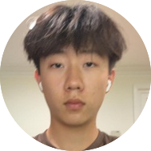
Wenhao is based in New Jersey. He is interested in the inersection of AI and the humanities, and how humanities concepts can influence AI design and safety. In his free time, he enjoys playing spikeball and exploring nature.

Hello everyone, my name is Hamzah Rizvi, I am based in Indiana, I am interested in the realm of bme and robotics, which is why I am interested to work in enginnering and all things tech related. In my free time I do three sports (volleyball, soccer, and track)
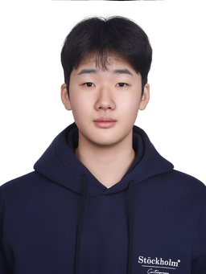
Ryan is based in Seoul, Korea. He is interested in biology and works on PanDx, looking at how earlier and cheaper diagnostics can reach more people. In his free time, he enjoys soccer and cooking.
Jun is based in Seoul, Korea. They are interested in mathematics, particularly the optimization and linear algebra that power modern AI systems. In their free time, they enjoy swimming and reading science fiction.
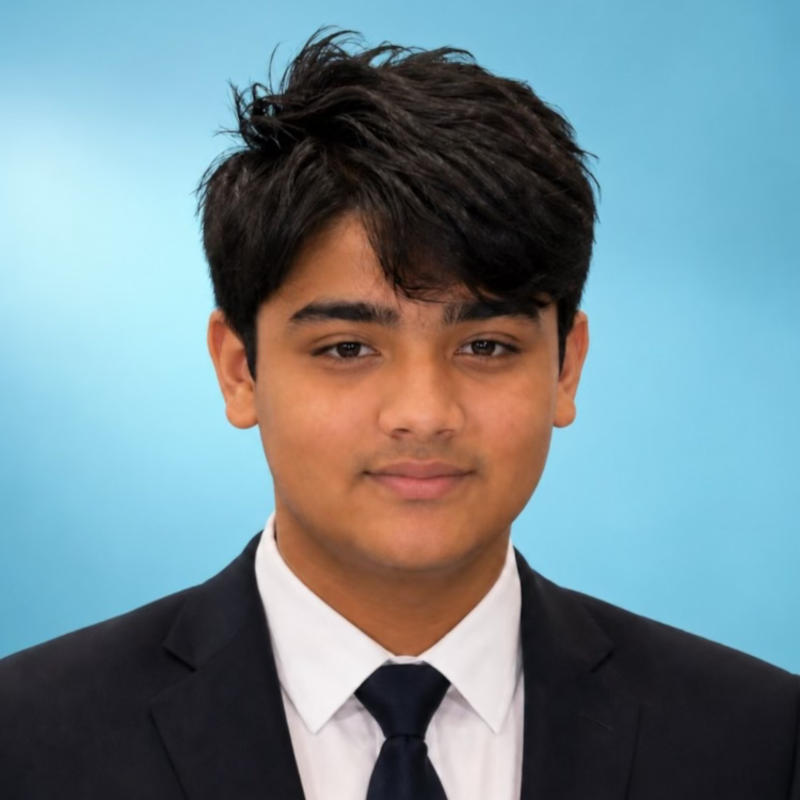
Spursh is based in California. He is interested in environmental science and computer science, and in using software to make environmental data easier to act on. In his free time, he enjoys cricket and building side projects.
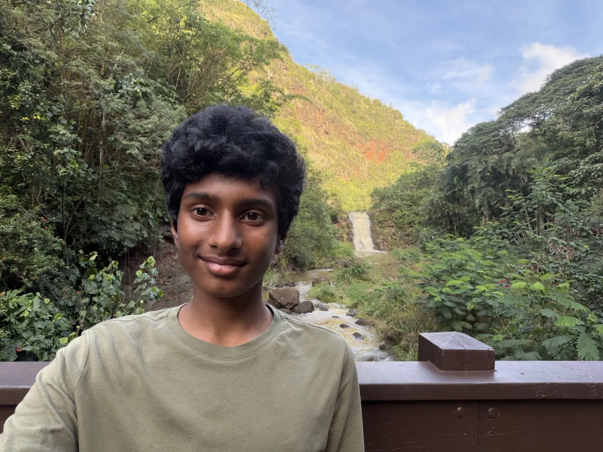
Jayvant is based in California. He is interested in environmental and electrical engineering, and in how better hardware and power systems can cut the footprint of the technology we rely on. In his free time, he enjoys tinkering with electronics and playing tennis.
Andrew is based in New Jersey. He is interested in computational biology, and in how machine learning can make sense of the messy data that comes out of the lab. In his free time, he enjoys playing piano and running.
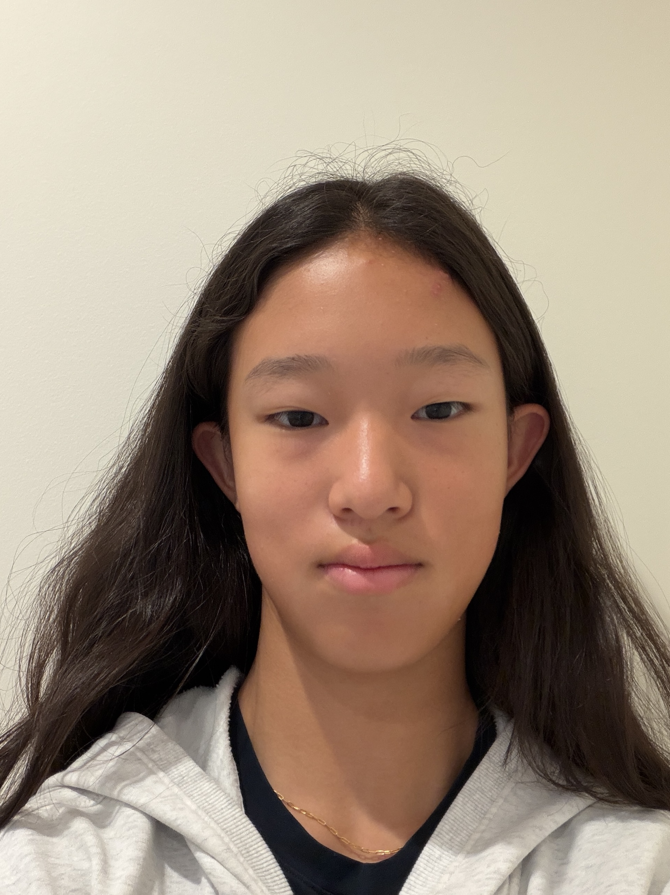
Hi! My name is Chloe Jin. I am based in New York. I am interested in the fields of AI and Biology, and I work in computational biology. In my free time, I can be found playing tennis or biking.
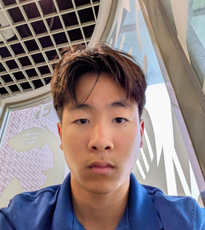
Chris is based in California. He is interested in dentistry and oral health, and in how imaging and AI tools can help catch problems earlier. In his free time, he enjoys weightlifting and cooking.
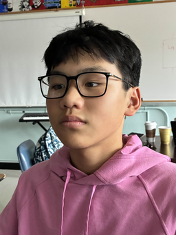
Collin is based in New Jersey. He is interested in environmental science, and in how modeling and data can shape better climate and conservation policy. In his free time, he enjoys hiking and photography.
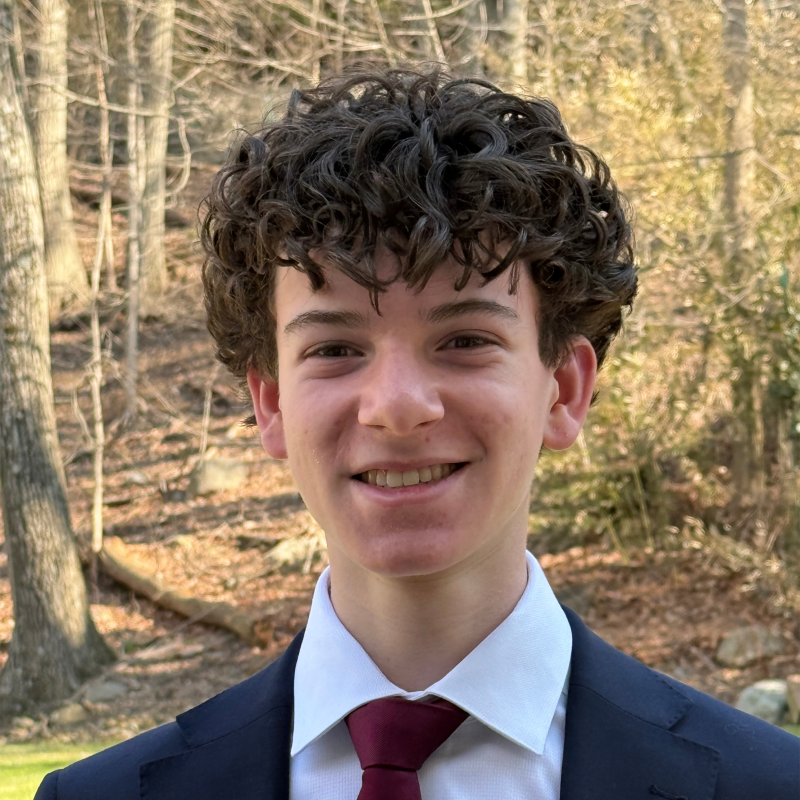
Jacob is based in New Jersey. He is interested in mathematics, especially the number theory and probability that sit underneath modern machine learning. In his free time, he enjoys chess and playing guitar.
David is based in New Jersey. He is interested in mathematics, and in how proof-based thinking carries over into questions about AI reliability. In his free time, he enjoys badminton and solving puzzles.
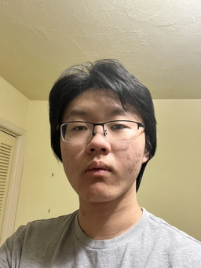
Jonathan is based in New Jersey. He is interested in biology and quantitative finance, and in how the same modeling tools show up in both fields. In his free time, he enjoys tennis and following markets.
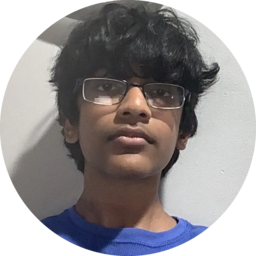
Aditya is based in New Jersey. He is interested in biology, especially genetics and how AI is changing the pace of biomedical research. In his free time, he enjoys basketball and logic puzzles.
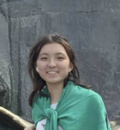
Kristen is based in California. She is interested in mathematics, and in the statistics and probability that underpin how AI systems are evaluated. In her free time, she enjoys drawing and playing volleyball.
For collaboration or for any question about our work.
If you are a researcher, educator, or student who wants to work on responsible AI for social good, write to us.
wenhao@nxthorizon.org